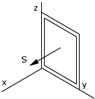

|
a) Discute
la corriente inducida en una espira al alejar o acercar un imán
en la dirección de su eje
b) Si el área de la espira
es de 300 cm2 y el campo magnético que sufre es 10-4
T cuando está cerca del imán y 0 cuando está lejos,
calcula la f.em cuando se aleja el imán en 0.01 s |
|
Una espira rectangular
está situada dentro de un campo magnético uniforme, perpendicularmente
a sus líneas.
a) Discute la corriente
que se induce en la espira al girar alrededor de su eje vertical
b) Si el área de
la espira es de 100 cm2 y el campo magnético de
0.45 T calcula la f.em producida al girar la espira 180º en
15 ms |
|
Una bobina rectangular de 50 espiras, de
15 x 25 cm2, está dentro de un campo magnético de 2 T formando
45º con la dirección de este. En 0.1 s gira hasta colocarse perpendicularmente
al campo. Calcula la f.e.m inducida |
 |
Calcula la f.e.m
inducida en la espira cuando esta se somete a un campo magnético:
a) B = B0
(i + o j + 0 k)
b) B = B0
cos ωt (i + 0 j + 0 k)
c) B = B0
cos ωt (0 i + 0 j + k)
Datos: S = 20 cm2,
B0 = 10-2 T, ω = 300 rad/s |
|
|
La figura muestra
un hilo conductor rectilíneo y una espira. Determina si se inducirá
corriente en la espira y el sentido de esta, cuando la espira:
a) Permanezca en reposo
b) Se mueva hacia arriba
paralelamente al hilo
c) Se mueva hacia la
derecha |
|
Una espira de radio de 10 cm está
colocada perpendicularmente a un campo magnético de 1.2 T.
En 0.2 s se aplasta la espira reduciendo su área a cero.
a) Determina el sentido de la corriente
inducida
b) Calcula la f.e.m creada |
|
La espira rectangular
tiene el lado ab (10 cm) móvil y está dentro de un
campo magnético uniforme de 1 T perpendicular a su plano
a) Indica el sentido de la
corriente inducida según dicho lado se mueva hacia la derecha
o izquierda
b) Si el lado móvil
se desplaza a 2 m/s calcula la f.e.m inducida |
|
Se hace girar una espira cuadrada de 0.5
m de lado con velocidad angular 200 rad/s dentro de un campo uniforme
de 0.8 T. Calcula la f.e.m inducida en la espira. |
En el plano XY se tiene una
espira de radio a = 2 cm. Simultáneamente se tiene un campo magnético
uniforme cuya dirección forma un ángulo de 30º con
el semieje Z positivo y cuya intensidad es
B = 3 e-t/2 (Teslas) donde t es el tiempo en segundos
a) Calcula el flujo de campo magnético
en la espira y su valor en t = 0
b ) Calcula la f.e.m inducida en la espira
en t = 0
c) Indica mediante un dibujo el sentido
de la corriente inducida en la espira |
Una barra metálica de 40 cm de longitud
está sometida a un campo magnético perpendicular de 0.2
T. La barra se mueve paralelamente a sí misma con una velocidad
de 14 m/s. Calcula:
a) Campo eléctrico en su interior
b) d.d.p entre sus extremos |
Un campo magnético variable con
el tiempo, de módulo B = 2 cos(300 t) Teslas, forma un ángulo
de 45º con el plano que contiene a una espira conductora circular
de radio R = 10 cm.
Calcular la f.e.m inducida |